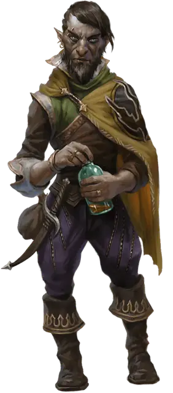

Скимо Вирдботл
Skeemo Weirdbottle
Маленький Гуманоид (Гном), законно-злой, именной НИП

Класс Доспеха 12 (15 с доспехами мага)
Хиты 72 (16к6 + 16)
Скорость 25 футов
| мод | спас | ||
|---|---|---|---|
| СИЛ | 9 | −1 | −1 |
| ЛОВ | 14 | +2 | +2 |
| ТЕЛ | 12 | +1 | +1 |
| мод | спас | ||
|---|---|---|---|
| ИНТ | 17 | +3 | +6 |
| МДР | 12 | +1 | +4 |
| ХАР | 15 | +2 | +2 |
Навыки Восприятие +4, Выступление +5, История +6, Магия +6
Чувства тёмное зрение 60 футов, пассивное Восприятие 14
Языки Общий, Бездны, Гномий, Подземный
Опасность 6 (2300 опыта)
Бонус мастерства +3
Особенности
Гномья хитрость. Скимо совершает с преимуществом спасброски Интеллекта, Мудрости и Харизмы от магии.
Использование заклинаний. Скимо является заклинателем 9-го уровня. Его базовой характеристикой является Интеллект (Сл спасброска от заклинания 14, +6 к попаданию атаками заклинаниями). У него подготовлены следующие заклинания волшебника:
• Заговоры (неограниченно): волшебная рука, огненный снаряд, свет, фокусы
• 1 уровень (4 ячейки): волшебная стрела, доспехи мага, обнаружение магии, щит
• 2 уровень (3 ячейки): внушение, туманный шаг
• 3 уровень (3 ячейки): контрзаклинание, огненный шар, полёт
• 4 уровень (3 ячейки): высшая невидимость, град
• 5 уровень (1 ячейка): конус холода
Действия
Кинжал. . Рукопашная или дальнобойная атака оружием: +5 к попаданию, досягаемость 5 футов или дистанция 20/60 футов, одна цель. Попадание: Колющий урон 4 (1к4 + 2).
Описание
Скимо стал мастером магии в Чёрной Сети Глубоководья.
Он устроил себе укрытие в Торговом районе в виде тес ной лавочки «Отвары Вирдботла». Большинство его зелий и эликсиров немагические, но для друзей по Жентарим он и магические может сварить.
Среди достоинств Скимо не числится верность друзьям.
Он продавал сведения и дому Гролхунд, и членам Чёрной Сети, работающим на Маншуна. И со старыми, и с новыми друзьями скальный гном переписывается с помощью бумажных птиц.
Разбойниками Рока прозвали себя пятеро беспринципных искателей приключений, обожавших грабить логова личей (которые многие называют «роковыми»).
Три года назад они прекратили поиски приключений, вступили в Чёрную Сеть и приехали в Глубоководье, планируя устроить тут ячейку Жентарим. За это время они заключили союзы с разными аристократами и гильдиями, а с другими поссорились, в то же время пытаясь отбиться от лазутчиков Арфистов.